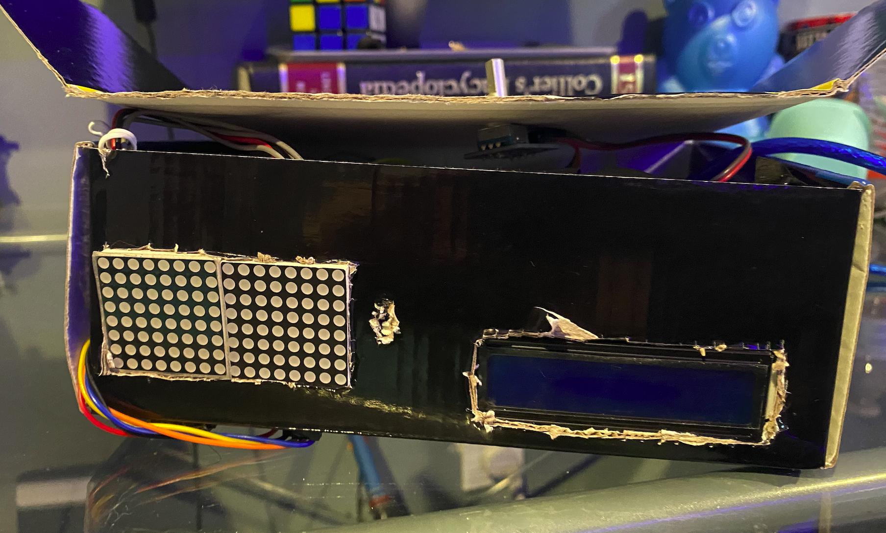
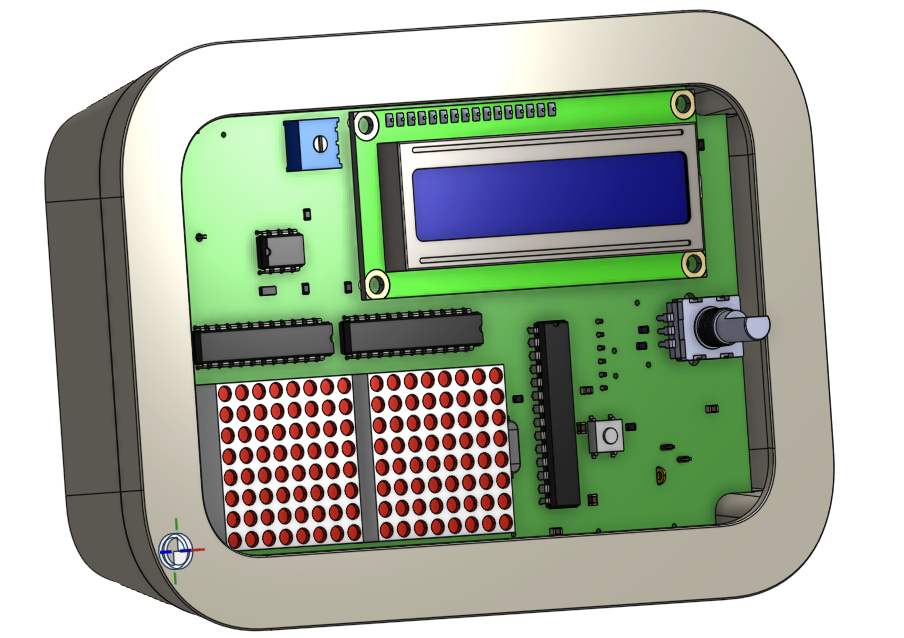

Clock Cardboard V1

This is a Cardboard version of my Clock, the PCB is soon to come and images will be added !
An Arduino is used to control the 8x8 Modules, LCD modules and tracks input through the Rotary Encoder
(On top).
It uses a RTC Module to keep track of real time !
Clock PCB Fit Check

This is the Fit Check Provided to me by one of the Coaches at the Hardware Spring Program (Matthew a
real Goat!)
This Fit Check shows the basics of the clock and how it would look like in real life. The 3D Model of
the PCB was generated through KiCAD.
You can check it out here!
Be wary onshape is heavy on your computer!
Clock PCB Front Raytracing
Clock PCB Back Raytracing


This is the Front of my PCB design!
Here you can see the 8x8 Display shown here in action! (As well as the LCD)
Included as well are the AT Mega, two MAX7219 (for the 8x8 displays) as well as the IC for the RTC Module!
You can also see the Rotary Encoder, the linear voltage regulator and my 16 MHz clock for the AT Mega!
The Clock is front has the letters ABC (for my family) as well as a quote of Dare Greatly! A message from All Star Code(ASC) I very much take to.
This is the Back of my PCB design!
Here you can see the two power supplies for my PCB, the 3V battery for the RTC as well as the power jack on the bottom left!
You can also see a few logos, the NBA HTML and JS PS are for the two cohorts I worked as a Teaching Assistant for during ASC SI 2021
Napkin Sketch
Block Diagram v1
Human Machine Interface (HMI) v1
Block Diagram v2
HMI v2


This is the simple napkin sketch that started it all!
The oringal idea was to use a few 7 Seg Displays to show the time.
The LCD module and Rotary Encoder were always apart of the plan.
I also thought of sensor for temperature but decided against it.
This is the first block design of my block!
Planning out how the parts in my clock would be linked together!
Version 2 looks a bit different!
This is the Human-Machine Interface (Version 1) of my Clock!
I originally planned to have two inputs, one for changine time and date as well as one changing the temp mode to Cº to Fº
3 Seven Segement displays were originally the idea.
This is the Second version of my Block diagram
As you can see I removed the Seven segement displays in favor for two 8x8 displays!
I've abstracted the ICs that would control this such as the MAX7219 or the RTC IC.
This is the Second verison of my HMI
As you can see it looks pretty familar at this point !